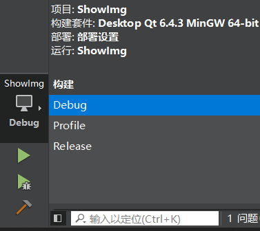
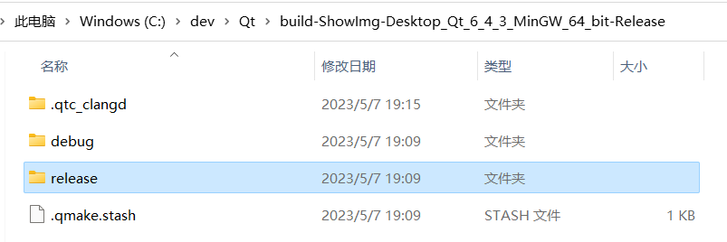
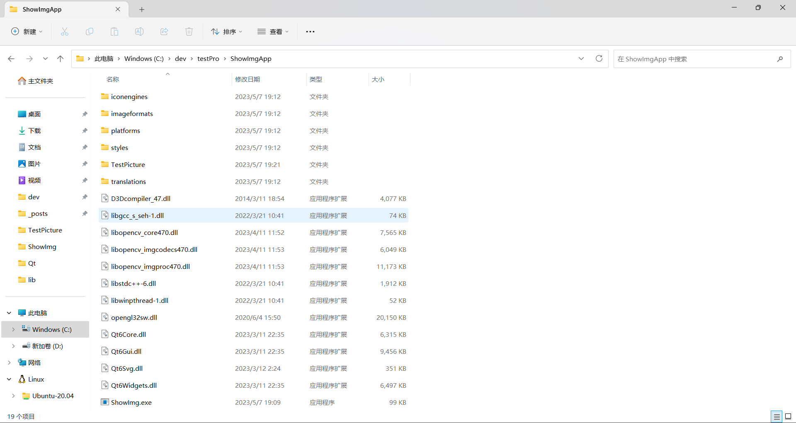

# 项目概述
实现简单的 tiff 数据图像加载、预览功能。
具体要求：
- 软件能够导入 8 位或 16 位深度 tiff 格式的灰度图。
- 实现图像放大、缩小、原大、适屏功能。
- 实现图像亮度、对比度、反色功能。
- 实现同一文件夹下图像文件的切换。（上一张、下一张）
困难点：
tiff 格式文件的读取、亮度对比度调节、QGraphicsView 显示图片
# 程序开发
showimg.h
#ifndef SHOWIMG_H | |
#define SHOWIMG_H | |
#include <QWidget> | |
#include <QDir> | |
#include <QDebug> | |
#include <QFileDialog> | |
#include <QFileInfoList> | |
#include <QImage> | |
#include <QImageReader> | |
#include <QList> | |
#include <QColor> | |
#include <QPixmap> | |
#include <QGraphicsItem> | |
#include <QGraphicsScene> | |
#include <QGraphicsView> | |
#include <opencv2/core.hpp> | |
#include <opencv2/highgui.hpp> | |
#include <opencv2/imgcodecs.hpp> | |
QT_BEGIN_NAMESPACE | |
namespace Ui { class showimg; } | |
QT_END_NAMESPACE | |
class showimg : public QWidget | |
{ | |
Q_OBJECT | |
public: | |
showimg(QWidget *parent = nullptr); | |
~showimg(); | |
void setimg(int idx); | |
private slots: | |
void on_preButton_clicked(); // 上一张槽函数 | |
void on_nextButton_clicked(); // 下一张槽函数 | |
void on_zoomInButton_clicked(); // 放大图片槽函数 | |
void on_zoomOutButton_clicked(); // 缩小图片槽函数 | |
void on_revertButton_clicked(); // 还原图片槽函数 | |
void on_fitButton_clicked(); // 适应屏幕槽函数 | |
void on_openButton_clicked(); // 打开文件夹槽函数 | |
void on_invertColorButton_stateChanged(int arg1); // 反色功能的槽函数 | |
void on_brightnessSlider_valueChanged(int value); // 亮度调节的槽函数 | |
void on_contrastSlider_valueChanged(int value); // 对比度调节的槽函数 | |
private: | |
Ui::showimg *ui; | |
int idx; | |
int imgCount; | |
QList<QString> files; | |
QDir dir; | |
QFileInfo fileInfo; | |
QFileInfoList list; | |
QImage *image; | |
QGraphicsScene* scene; | |
QPixmap pixmap; | |
QGraphicsPixmapItem* item; | |
QPixmap originalPixmap; | |
}; | |
#endif // SHOWIMG_H |
showimg.cpp
#include "showimg.h" | |
#include "ui_showimg.h" | |
showimg::showimg(QWidget *parent) | |
: QWidget(parent) | |
, ui(new Ui::showimg) | |
{ | |
ui->setupUi(this); | |
this->image = new QImage(); | |
} | |
showimg::~showimg() | |
{ | |
delete ui; | |
} | |
void showimg::setimg(int idx) | |
{ | |
if(list.at(idx).suffix() == "tiff") { | |
cv::Mat image = cv::imread(files[idx].toStdString(), cv::IMREAD_UNCHANGED); | |
// Convert the OpenCV Mat object to QImage | |
QImage qimg(image.data, image.cols, image.rows, static_cast<int>(image.step), QImage::Format_Grayscale8); | |
// Convert the QImage to QPixmap | |
pixmap = QPixmap::fromImage(qimg); | |
item = new QGraphicsPixmapItem(pixmap); | |
scene = new QGraphicsScene; | |
scene->addItem(item); | |
ui->path->setText(files[idx]); | |
originalPixmap = item->pixmap(); // 保存原始图片 | |
// 设置场景和视图 | |
ui->graphicsView->setScene(scene); | |
// 将视图缩放到适应图片项 | |
ui->graphicsView->fitInView(item, Qt::KeepAspectRatio); | |
} | |
else { | |
QImageReader reader(files[idx]); | |
QImage image = reader.read(); | |
pixmap = QPixmap::fromImage(image); | |
item = new QGraphicsPixmapItem(pixmap); | |
scene = new QGraphicsScene; | |
scene->addItem(item); | |
ui->path->setText(files[idx]); | |
originalPixmap = item->pixmap(); // 保存原始图片 | |
// 设置场景和视图 | |
ui->graphicsView->setScene(scene); | |
// 将视图缩放到适应图片项 | |
ui->graphicsView->fitInView(item, Qt::KeepAspectRatio); | |
} | |
} | |
// 上一张槽函数 | |
void showimg::on_preButton_clicked() | |
{ | |
idx--; | |
if(files.isEmpty()) return; | |
// 显示上一张图片 | |
if(idx < 0){ | |
idx = imgCount - 1; | |
} | |
setimg(idx); | |
} | |
// 下一张槽函数 | |
void showimg::on_nextButton_clicked() | |
{ | |
idx++; | |
if(files.isEmpty()) return; | |
// 显示下一张图片 | |
if(idx > imgCount - 1){ | |
idx = 0; | |
} | |
setimg(idx); | |
} | |
// 放大图片槽函数 | |
void showimg::on_zoomInButton_clicked() | |
{ | |
ui->graphicsView->scale(1.2, 1.2); | |
} | |
// 缩小图片槽函数 | |
void showimg::on_zoomOutButton_clicked() | |
{ | |
ui->graphicsView->scale(1.0/1.2, 1.0/1.2); | |
} | |
// 还原图片槽函数 | |
void showimg::on_revertButton_clicked() | |
{ | |
item = new QGraphicsPixmapItem(originalPixmap); | |
scene->addItem(item); | |
// 设置场景和视图 | |
ui->graphicsView->setScene(scene); | |
// 将视图缩放到适应图片项 | |
ui->graphicsView->fitInView(item, Qt::KeepAspectRatio); | |
ui->brightnessSlider->setValue(0); | |
ui->contrastSlider->setValue(100); | |
ui->invertColorButton->setCheckState(Qt::Unchecked); | |
} | |
// 适应屏幕槽函数 | |
void showimg::on_fitButton_clicked() | |
{ | |
ui->graphicsView->fitInView(ui->graphicsView->scene()->items().at(0), Qt::KeepAspectRatio); | |
} | |
// 打开文件夹加载图片的槽函数 | |
void showimg::on_openButton_clicked() | |
{ | |
QString filename = QFileDialog::getOpenFileName(this, "所有图片", QDir::currentPath(), "Image Files (*.png *.jpg *.bmp *.tif *.tiff)"); | |
qDebug() << filename; | |
if (filename.isEmpty()) { | |
return; | |
} | |
QString filepath = QFileInfo(filename).absolutePath(); | |
qDebug() << "文件路径：" <<filepath; | |
QDir dir(filepath); | |
dir.setFilter(QDir::Files | QDir::NoSymLinks); | |
list = dir.entryInfoList(QStringList() << "*.jpg" | |
<< "*.png" | |
<< "*.bmp" | |
<< "*.tif" | |
<< "*.tiff"); | |
files.clear(); | |
for (int i = 0; i < list.size(); i++) | |
{ | |
QFileInfo fileInfo = list.at(i); | |
qDebug() << fileInfo.absoluteFilePath(); | |
files.push_back(fileInfo.absoluteFilePath()); | |
if(filename == files[i]) | |
{ | |
idx = i; | |
} | |
} | |
imgCount = files.size(); | |
qDebug() << files.size() <<"张图片"; | |
setimg(idx); | |
} | |
// 反色功能的槽函数 | |
void showimg::on_invertColorButton_stateChanged(int arg1) | |
{ | |
// 获取 QGraphicsPixmapItem 对象 | |
QGraphicsPixmapItem* pixmapItem = nullptr; | |
QList<QGraphicsItem*> items = ui->graphicsView->scene()->items(); | |
foreach (QGraphicsItem* item, items) { | |
if (item->type() == QGraphicsPixmapItem::Type) { | |
pixmapItem = qgraphicsitem_cast<QGraphicsPixmapItem*>(item); | |
break; | |
} | |
} | |
// 获取图片的原始像素数据 | |
QImage image = pixmapItem->pixmap().toImage(); | |
int width = image.width(); | |
int height = image.height(); | |
// 反色处理 | |
for (int y = 0; y < height; y++) { | |
for (int x = 0; x < width; x++) { | |
QRgb color = image.pixel(x, y); | |
int r = 255 - qRed(color); | |
int g = 255 - qGreen(color); | |
int b = 255 - qBlue(color); | |
image.setPixel(x, y, qRgb(r, g, b)); | |
} | |
} | |
// 更新 QGraphicsPixmapItem 对象的像素数据 | |
pixmapItem->setPixmap(QPixmap::fromImage(image)); | |
} | |
// 亮度调节的槽函数 | |
void showimg::on_brightnessSlider_valueChanged(int value) | |
{ | |
// Convert the pixmap to a QImage | |
QImage image = originalPixmap.toImage(); | |
// Adjust the brightness of each pixel in the image | |
for (int y = 0; y < image.height(); y++) { | |
for (int x = 0; x < image.width(); x++) { | |
QColor color = image.pixelColor(x, y); | |
int newBrightness = qBound(0, color.lightness() + value, 255); | |
color.setHsl(color.hue(), color.saturation(), newBrightness); | |
image.setPixelColor(x, y, color); | |
} | |
} | |
// Update the pixmap with the modified image | |
QPixmap modifiedPixmap = QPixmap::fromImage(image); | |
// Update the QGraphicsPixmapItem object with the modified pixmap | |
item->setPixmap(modifiedPixmap); | |
} | |
// 对比度调节的槽函数 | |
void showimg::on_contrastSlider_valueChanged(int value) | |
{ | |
// Convert the pixmap to a QImage | |
QImage image = originalPixmap.toImage(); | |
qreal contrast = (qreal)value / 100.0; | |
for (int y = 0; y < image.height(); y++) { | |
for (int x = 0; x < image.width(); x++) { | |
QColor color = image.pixelColor(x, y); | |
qreal lightness = color.lightnessF(); | |
qreal newLightness = (lightness - 0.5) * contrast + 0.5; | |
color = QColor::fromHslF(color.hslHueF(), color.hslSaturationF(), newLightness); | |
image.setPixelColor(x, y, color); | |
} | |
} | |
// Update the pixmap with the modified image | |
QPixmap modifiedPixmap = QPixmap::fromImage(image); | |
// Update the QGraphicsPixmapItem object with the modified pixmap | |
item->setPixmap(modifiedPixmap); | |
} |
main.cpp
#include "showimg.h" | |
#include <QApplication> | |
int main(int argc, char *argv[]) | |
{ | |
QApplication a(argc, argv); | |
showimg w; | |
w.show(); | |
return a.exec(); | |
} |
# Qt 配置 openCV 库
Qt 配置 OpenCV 教程（详细版）_Wi~ 的博客 - CSDN 博客
# Qt 程序发布（生成 Release 版程序）
当 Qt 程序编写完成通过 IDE 编译就可以得到对应的可执行程序，这个可执行程序在本地运行是完全没有问题的（因为在本地有 Qt 环境，程序运行过程中可以加载到相关的动态库），要在其他机器运行可以生成 Release 版程序
在编写 Qt 程序的时候，不管我们使用的什么样的 IDE 都可以进行编译版本的切换，如果要发布程序需要切换为 Release 版本（Debug 为调试版本），编译器会对生成的 Release 版可执行程序进行优化，生成的可执行程序会更小。
模式选择完毕之后开始构建当前项目，最后找到生成的带 Release 后缀的构建目录：
进图到 release 目录中，在里面就能找到可执行程序
生成的可执行程序在运行的时候需要加载相关的 Qt 库文件，因此需要将这些动态库一并发布给使用者，Qt 官方给我们提供了相关的发布工具，通过这个工具就可以非常轻松的找出这些动态库文件了，这个工具叫做 windeployqt.exe ，该文件位于 Qt 安装目录的编译套件目录的 bin 目录中
C:\Qt\6.4.3\mingw_64\bin
首先将生成的 Release 版本的可执行程序放到一个新建的空目录中，再在新的目录命令行下执行命令：
windeployqt.exe ShowImage.exe |
这样 ShowImage.exe 需要的动态库会被全部拷贝到当前的目录中，如下图：
